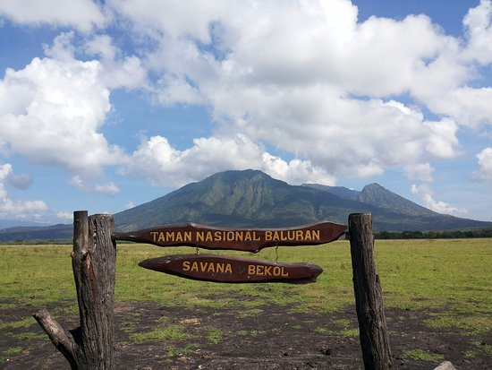
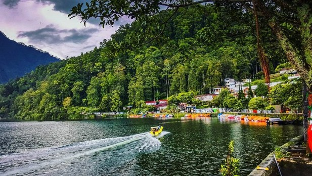

Gunung Bromo bukan sekadar destinasi wisata. Di balik panorama sunrise yang memukau dan lautan pasirnya yang megah, tersembunyi kisah-kisah legenda,
tradisi suku Tengger, hingga aura mistis yang sulit diabaikan. Apa yang membuat gunung ini begitu istimewa, hingga menarik jutaan wisatawan setiap tahunnya?
Apakah Anda siap menjelajahi keindahan sekaligus misteri yang menyelimuti Gunung Bromo?
Read More »

Apa yang menjadikan Baluran begitu istimewa? Selain keindahannya, taman nasional ini memiliki hubungan erat dengan konservasi satwa, sejarah perburuan masa kolonial, dan kepercayaan lokal yang penuh misteri. Ingin tahu bagaimana cerita ini berkembang? Yuk, lanjutkan membaca untuk menyelami keajaiban Taman Nasional Baluran yang penuh pesona dan rahasia!
Read More »

Pernahkah Anda mendengar tentang api biru yang hanya ada di dua tempat di dunia? Atau danau kawah yang berwarna hijau toska, tapi ternyata beracun? Kawah Ijen di Jawa Timur adalah perpaduan keindahan alam dan misteri yang memikat. Tak hanya menawarkan panorama luar biasa, kawasan ini juga menyimpan cerita tentang para penambang belerang yang tangguh, serta kisah-kisah mistis yang membuat bulu kuduk merinding.
Read More »

Pernahkah Anda membayangkan sebuah telaga yang memancarkan ketenangan, namun menyimpan kisah naga dan larangan mistis di balik keindahannya? Telaga Sarangan, yang terletak di lereng Gunung Lawu, bukan hanya menawarkan pemandangan alam yang memukau, tetapi juga cerita legenda yang membuatnya unik dan penuh misteri.
Read More »